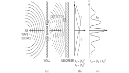

Материалы главы
Сгенерированные учебные материалы NotebookLM для этой главы.
Глава 1. Квантовое поведение
1–1 Атомная механика#
«Квантовая механика» — это описание поведения вещества и света во всех деталях, в частности всего происходящего в атомных масштабах. Поведение тела очень малого размера не похоже ни на что, с чем вы повседневно сталкиваетесь. Эти тела не ведут себя ни как волны, ни как частицы, ни как облака, или биллиардные шары, или грузы, подвешенные на пружинах, — словом, они не похожи ни на что из того, что вам хоть когда-нибудь приходилось видеть.
Ньютон считал, что свет состоит из частиц, но потом обнаружилось, что он ведет себя подобно волнам. Позже, однако (в начале XX века), выяснилось, что свет действительно временами ведет себя как частица. Исторически об электроне, например, думали, что он ведет себя как частица, а потом было установлено, что во многих отношениях он ведет себя как волна. Значит, на самом деле его поведение ни на что не похоже. И мы сдались. Мы так и говорим: «Он ни на что не похож».
Однако, к счастью, есть еще одна лазейка: дело в том, что электроны ведут себя в точности подобно свету. Квантовое поведение всех атомных объектов (электронов, протонов, нейтронов, фотонов и т. д.) одинаково: всех их можно назвать «частицами-волнами» (годится, впрочем, и любое другое название). Значит, все, что вы узнаете про свойства электронов (а именно они будут служить нам примером), все это будет применимо к любым «частицам», включая фотоны света.
В течение первой четверти нашего века постепенно накапливалась информация о поведении атомов и других мельчайших частиц, и знакомство с этим поведением вело ко все большему замешательству среди физиков. В 1926—1927 гг. оно было устранено работами Шредингера, Гейзенберга и Борна. Им удалось в конце концов получить непротиворечивое описание поведения вещества атомных размеров. Основные характерные черты этого описания мы и разберем в данной главе.
Раз поведение атомов так не похоже на наш обыденный опыт, то к нему очень трудно привыкнуть. И новичку в науке, и опытному физику — всем оно кажется своеобразным и туманным. Даже большие ученые не понимают его настолько, как им хотелось бы, и совершенно естественно, потому что весь непосредственный опыт человека, вся его интуиция — все это обращено к крупным телам. Мы знаем, что будет с большим предметом; но именно так мельчайшие тельца и не поступают. Поэтому, изучая их, приходится прибегать к различного рода абстракциям, напрягать воображение и не пытаться связывать их с нашим непосредственным опытом.
В этой главе мы сразу же попробуем ухватить самый основной элемент таинственного поведения в самой странной его форме. Мы выбрали для анализа такое явление, которое невозможно, совершенно, абсолютно невозможно объяснить классическим образом. В этом явлении таится самая суть квантовой механики. На самом деле в ней имеется только одна тайна. Мы не можем раскрыть ее в том смысле, что не можем «объяснить», как она работает. Мы просто расскажем вам, как она работает. Рассказывая об этом, мы познакомим вас с основными особенностями всей квантовой механики.
1–2 Опыт с пулеметной стрельбой#

Пытаясь понять квантовое поведение электронов, мы сопоставим его с привычными нам движениями обычных частиц, похожих на пулю, и обычных волн, похожих на волны на воде. Сперва мы займемся стрельбой из устройства, схематически показанного на фиг. 1–1. Это пулемет, выпускающий целый сноп пуль. Он не очень хорош, этот пулемет: его пули рассеиваются (случайным образом) на довольно широкий угол, как это изображено на рисунке. Перед пулеметом стоит плита (броневая), а в ней есть две дыры, через которые пуля свободно проходит. За плитой расположен земляной вал, который «поглощает» попавшие в него пули. Перед валом стоит предмет, который мы назовем «детектором». Им может служить, скажем, ящик с песком. Любая пуля, попав в детектор, застревает в нем. Если нужно, ящик открывают и все попавшие внутрь пули пересчитывают. Детектор можно передвигать взад и вперед (в направлении x). С помощью этого прибора мы можем экспериментально ответить на вопрос: «Какова вероятность того, что пуля, проникшая сквозь плиту, попадет в вал на расстоянии x от середины?» Прежде всего, вы должны понять, что мы говорим только о вероятности, потому что невозможно сказать определенно, куда попадет очередная пуля. Пуля, даже попав в дыру, может срикошетить от ее края и уйти вообще неизвестно куда. Под «вероятностью» мы понимаем шанс попасть пулей в детектор; этот шанс можно измерить, подсчитав, сколько пуль попало в детектор за определенное время, а затем разделив это число на полное число пуль, попавших в вал за то же время. Или, полагая, что скорость стрельбы во время измерений была постоянной, мы можем считать, что интересующая нас вероятность просто пропорциональна числу пуль, попавших в детектор за некоторый стандартный интервал времени.
Для наших целей нужно вообразить немного идеализированный опыт, когда пули не дают осколков и остаются целыми — они не могут расколоться пополам. В нашем опыте мы обнаружим, что пули всегда попадают в детектор порциями; если уж мы что-то нащупали в детекторе, то это всегда целая пуля. Даже когда скорость стрельбы из пулемета становится очень малой, мы обнаруживаем, что в любой момент времени в детектор либо ничего не попадает, либо попадает одна и только одна — непременно одна — целая пуля. Кроме того, размер порции совершенно не зависит от скорости стрельбы. Мы говорим поэтому: «Пули всегда приходят равными порциями». С помощью нашего детектора мы измеряем вероятность прихода такой порции. Мы измеряем вероятность как функцию x. Результат таких измерений с этим прибором (мы, правда, пока еще не провели такого эксперимента и сейчас просто воображаем, каким будет результат) изображен на графике в части (с) фиг. 1–1. На графике вероятность отложена вправо, а x — по вертикали, так что масштаб x соответствует схеме прибора. Вероятность обозначена P_{12}, чтобы подчеркнуть, что пули могли проходить и сквозь отверстие 1, и сквозь отверстие 2. Вас, конечно, не удивит, что P_{12} велико вблизи середины графика, но становится малым, если x очень велико. Вас может, однако, смутить, почему P_{12} имеет наибольшее значение при x=0. Это легко понять, если еще раз проделать опыт, заткнув отверстие 2, а затем — отверстие 1. Когда отверстие 2 закрыто, пули могут проходить лишь сквозь отверстие 1, и получится кривая, обозначенная P_1 в части (b) рисунка. Как и следовало ожидать, максимум P_1 приходится на то значение x, которое лежит на прямой от пулемета через отверстие 1. А если закрыть отверстие 1, то получится симметричная кривая P_2, изображенная на рисунке. P_2 — это распределение вероятностей для пуль, проскочивших сквозь отверстие 2. Сравнив части (b) и (c) фиг. 1–1, мы получаем важный результат
Вероятности просто складываются. Действие двух открытых отверстий складывается из действий каждого отверстия в отдельности. Этот результат наблюдений мы назовем отсутствием интерференции по причине, о которой вы узнаете позже. На этом мы покончим с пулями. Они приходят порциями, и вероятность их попадания не обнаруживает никакой интерференции.
1–3 Опыт с волнами#

Теперь рассмотрим опыт с волнами на воде. Прибор показан схематически на фиг. 1–2. Это мелкое корытце с водой. Предмет, обозначенный как «источник волн», колеблясь при помощи моторчика вверх и вниз, вызывает круговые волны. Справа от источника опять стоит перегородка с двумя отверстиями, а дальше — вторая стенка, которая для простоты сделана «поглощающей» (чтобы волны не отражались). Это можно сделать, насыпав пологую песчаную «отмель». Перед отмелью помещается детектор, который, как и раньше, можно передвигать по оси x. Теперь детектор — это устройство, измеряющее «интенсивность» волнового движения. Представьте себе приспособление, измеряющее высоту волн, но шкала которого откалибрована пропорционально квадрату действительной высоты, так что отсчеты шкалы пропорциональны интенсивности волны. Таким образом, детектор показывает величину, пропорциональную энергии, переносимой волной, или, точнее, долю энергии, доставляемую детектору.
Первое, в чем можно убедиться при помощи нашего волнового аппарата, — это что интенсивность может быть любой величины. Если источник движется лишь слегка, то и у детектора наблюдается лишь небольшое волновое движение. Когда движение источника возрастает, возрастает и интенсивность у детектора. Интенсивность волны может принимать любые значения. Мы бы не стали говорить о какой-либо «порционности» интенсивности волн.
Теперь измерим интенсивность волн при различных значениях x (поддерживая работу источника волн неизменной). Мы получим интересную кривую (кривая I_{12} на части (в) рисунка).
Мы уже видели, откуда могут возникать такие картинки, — это было тогда, когда мы изучали интерференцию электромагнитных волн. И здесь мы могли бы увидеть, как первоначальная волна дифрагирует на отверстиях, как от каждой щели расходятся круги волн. Если на время одну щель прикрыть и измерить распределение интенсивности у поглотителя, то кривые выйдут довольно простыми, как показано на части (б) этого рисунка. I_1 — это интенсивность волн от щели 1 (которую мы находим, измеряя ее при закрытой щели 2), а I_2 — интенсивность волн от щели 2 (наблюдаемая при закрытой щели 1).
Интенсивность I_{12}, наблюдаемая, когда оба отверстия открыты, определенно не равна сумме I_1 и I_2. Мы говорим, что здесь происходит «интерференция» двух волн. В некоторых местах (где на кривой I_{12} наблюдается максимум) волны оказываются «в фазе», и пики волн складываются вместе, давая большую амплитуду и, следовательно, большую интенсивность. В этих местах мы говорим, что волны «интерферируют конструктивно». Такая конструктивная интерференция будет наблюдаться везде, где расстояние от детектора до одного отверстия отличается от расстояния до другого на целое число длин волн.
В тех местах, куда две волны приходят со сдвигом фаз \pi (т. е. находятся «в противофазе»), движение волны представляет собой разность двух амплитуд. Волны «интерферируют деструктивно», интенсивность получается маленькой. Мы ожидаем малые значения везде, где расстояние между отверстием 1 и детектором отличается от расстояния между отверстием 2 и детектором на нечетное число полуволн. Малые значения I_{12} на фиг. 1–2 отвечают местам, где две волны интерферируют деструктивно.
Вы помните, что количественную связь между I_1, I_2 и I_{12} можно выразить следующим образом: мгновенная высота волны в детекторе от щели 1 может быть представлена в виде (действительной части) h_1e^{i\omega t}, где «амплитуда» h_1 — вообще говоря, комплексное число. Интенсивность пропорциональна среднему квадрату высоты, или, пользуясь комплексными числами, \left|h_1\right|^2. Высота волн от щели 2 тоже равна h_2e^{i\omega t}, а интенсивность пропорциональна \left|h_2\right|^2. Когда обе щели открыты, высоты волн складываются, давая высоту (h_1+h_2)e^{i\omega t} и интенсивность \left|h_1+h_2\right|^2. Опуская множитель пропорциональности, который нас сейчас не интересует, формулу для интерферирующих волн можно записать в виде
Вы увидите, что результат совсем не похож на тот, что получался с пулями (уравнение 1.1). Раскрыв \left|h_1+h_2\right|^2, мы напишем
где \delta — разность фаз между h_1 и h_2. В терминах интенсивностей мы можем записать
Последний член в (1.4) и есть «интерференционный член». На этом мы покончим с волнами на воде. Интенсивность их может быть любой, и они обнаруживают интерференцию.
1–4 Опыт с электронами#

Теперь представим себе такой же опыт с электронами. Схема его изображена на фиг. 1–3. Мы поставим электронную пушку, которая состоит из вольфрамовой проволочки, нагреваемой током и помещенной в металлическую коробку с отверстием. Если на проволочку подано отрицательное напряжение по отношению к коробке, то электроны, испущенные проволокой, будут разгоняться стенками и некоторые из них проскочат сквозь отверстие. Все электроны, которые выскочат из пушки, будут обладать (примерно) одинаковой энергией. А перед пушкой мы поставим снова стенку (на этот раз тонкую металлическую пластинку) с двумя дырочками. За стенкой стоит другая пластинка, она служит «земляным валом», поглотителем. Перед ним мы поместим подвижный детектор, скажем счетчик Гейгера, а еще лучше — электронный умножитель, к которому подсоединен динамик.
Заранее предупреждаем вас: не пытайтесь проделать этот опыт (в отличие от первых двух, которые вы, быть может, уже проделали). Этот опыт никогда никто так не ставил. Все дело в том, что для получения интересующих нас эффектов прибор должен быть чересчур миниатюрным. Мы с вами ставим сейчас «мысленный эксперимент», отличающийся от других тем, что его легко обдумать. Что должно в нем получиться, известно заранее, потому что уже проделано множество опытов на приборах, размеры и пропорции которых были подобраны так, чтобы стал заметен тот эффект, который мы сейчас опишем.
Первое, что мы замечаем в нашем опыте с электронами, это резкие «щелк», «щелк», доносящиеся из детектора (вернее, из динамика). Все «щелк» одинаковы. Никаких «полу-щелков».
Мы также заметили бы, что «щелчки» следуют совершенно нерегулярно. Скажем, так: щелк... щелк-щелк... щелк... щелк... щелк-щелк... щелк... и т. д., как вы, без сомнения, слышали при работе счетчика Гейгера. Если подсчитать количество щелчков за достаточно длительное время (скажем, за несколько минут), а затем снова подсчитать их за другой такой же промежуток времени, то оба числа будут почти одинаковыми. Поэтому можно говорить о средней частоте, с которой слышны щелчки (столько-то «щелчков» в минуту в среднем).
Когда мы переставляем детектор, частота щелчков то растет, то падает, но величина (громкость) каждого «щелк» всегда остается одной и той же. Если мы охладим проволоку в пушке, частота щелчков спадет, но каждый «щелк» будет звучать, как прежде. Мы заметим также, что если поставить у поглотителя два отдельных детектора, то щелкает то один из них, то другой, но никогда оба вместе. (Разве что иногда наше ухо не разделит двух щелчков, последовавших очень быстро один за другим.) Мы заключаем поэтому, что все, что попадает в поглотитель, приходит туда «порциями». Все «порции» одной величины: в детектор попадают только целые «порции», и приходят они по одной. Мы говорим: «Электроны всегда приходят одинаковыми порциями».
Как и в том опыте со стрельбой из пулемета, мы попытаемся теперь поискать в новом опыте ответ на вопрос: «Какова относительная вероятность того, что электронная «порция» попадет в поглотитель на разных расстояниях x от середины?» Как и в том опыте, мы получим относительную вероятность, подсчитывая частоту щелчков при стабильно работающей пушке. Вероятность, что порции окажутся на определенном расстоянии x, пропорциональна средней частоте щелчков при этом x.
В результате нашего опыта получена интереснейшая кривая P_{12}, изображенная на фиг. 1–3, в. Да! Именно так и ведут себя электроны!
1–5 Интерференция электронных волн#
Попытаемся проанализировать кривую на фиг. 1–3 и посмотрим, сможем ли мы понять поведение электронов. Первое, что хочется отметить, это что раз они приходят порциями, то каждая из порций (ее тоже естественно именовать электроном) проходит либо сквозь отверстие 1, либо сквозь отверстие 2. Мы зафиксируем это в виде «Утверждения». Утверждение А: Каждый электрон проходит либо сквозь отверстие 1, либо сквозь отверстие 2.
Если предположить, что справедливо утверждение А, то все электроны, достигшие поглотителя, можно разбить на два класса: 1) проникшие сквозь отверстие 1; 2) проникшие сквозь отверстие 2. Значит, полученная кривая — это сумма эффектов от электронов, прошедших сквозь отверстие 1, и электронов, прошедших сквозь отверстие 2. Давайте проверим это соображение экспериментально. Сначала проведем измерения с электронами, которые пройдут сквозь отверстие 1. Закроем отверстие 2 и подсчитаем щелчки в детекторе. Из частоты щелчков мы получим значение P_1. Результат измерений показан на кривой P_1 в части (b) фиг. 1–3. Выглядит это вполне разумно. Точно таким же образом измерим P_2 — распределение вероятностей для электронов, прошедших сквозь отверстие 2. Оно тоже показано на рисунке.
Кривая P_{12}, полученная, когда оба отверстия открыты, явным образом не совпадает с суммой P_1 и P_2 (суммой вероятностей при только одном работающем отверстии). По аналогии с нашим опытом с волнами на воде мы скажем: «Здесь есть интерференция».
Как же возникают такие интерференционные явления? Быть может, нам следует сказать: «Ну что ж, это, по-видимому, означает, что утверждение о том, будто порции проходят либо через отверстие 1, либо через отверстие 2, неверно, ведь если бы это было так, то складывались бы вероятности. Должно быть, их движение сложнее. Они разбиваются пополам и…» Да нет же! Это не так, они всегда приходят целыми порциями… «Ну ладно, тогда, может, кое-кто из них, пройдя сквозь отверстие 1, заворачивает в 2, а после опять в него, и так несколько раз, или еще как-то бродит по обоим отверстиям… Тогда, закрыв отверстие 2, мы изменим вероятность того, что электрон, выйдя из отверстия 1, попадет в конце концов в поглотитель…» Но посмотрите-ка! Есть такие точки, в которые при обоих открытых отверстиях попадает очень мало электронов, а при одном закрытом отверстии их попадает гораздо больше; выходит, закрытие одного отверстия увеличивает число электронов, проходящих через другое. Заметьте, однако, что в центре кривой P_{12} более чем вдвое превышает P_1+P_2. Это выглядит так, словно закрытие одного отверстия уменьшает число электронов, проходящих сквозь другое. Объяснить оба эффекта, предполагая, что электроны блуждают по сложным траекториям, пожалуй, довольно трудно.
Все это выглядит весьма таинственно. И тем таинственней, чем больше об этом думаешь. Идей, объясняющих кривую P_{12} как результат сложного движения отдельных электронов через оба отверстия, было сфабриковано немало. Но ни одна из этих попыток не была успешной. Ни одна не смогла выразить P_{12} через P_1 и P_2.
При этом, как ни странно, математика, связывающая P_1 и P_2 с P_{12}, проста до чрезвычайности. Кривая P_{12} ничем не отличается от кривой I_{12} на фиг. 1–2, а последнюю-то получить очень просто. То, что происходит у поглотителя, может быть описано двумя комплексными числами, которые мы назовем \phi_1 и \phi_2 (это, конечно, функции от x). Квадрат абсолютной величины \phi_1 дает эффект при открытом только отверстии 1. То есть P_1=\left|\phi_1\right|^2. Эффект при открытом только отверстии 2 получается таким же образом из \phi_2. То есть P_2=\left|\phi_2\right|^2. А общее действие обоих отверстий выразится в виде P_{12}=\left|\phi_1+\phi_2\right|^2. Выкладки абсолютно те же, что и для волн на воде! (А попробуйте-ка, кстати, получить такой простой результат, считая, что электроны шныряют взад и вперед сквозь пластинку по необычным траекториям.)
В конце концов мы приходим к следующему заключению: электроны приходят порциями, подобно частицам, а вероятность прибытия этих порций распределена так же, как и интенсивность волн. Именно в этом смысле электрон ведет себя «отчасти как частица, отчасти как волна».
Кстати, когда мы имели дело с классическими волнами, мы определили интенсивность как среднее по времени от квадрата амплитуды волны и использовали комплексные числа как математический прием, облегчающий расчеты. Но в квантовой механике амплитуды обязаны представляться комплексными числами. Одной только действительной части амплитуд недостаточно. Пока, впрочем, это выглядит лишь как техническая подробность, потому что формулы с виду одни и те же.
Поскольку вероятность прибытия через оба отверстия задается так просто, хотя она и не равна (P_1+P_2), это, собственно, всё, что можно сказать. Но существует множество тонкостей, связанных с тем, что природа действительно устроена именно так. Мы хотели бы рассказать вам о некоторых из них. Во-первых, раз число частиц, достигающих определенной точки, не равно числу прохождений сквозь отверстие 1 плюс число прохождений через отверстие 2, как этого можно было ожидать, основываясь на «Утверждении А», то, несомненно, следует сделать вывод, что «Утверждение А» неверно. Неверно, что электроны проходят либо сквозь отверстие 1, либо сквозь отверстие 2. Но этот вывод можно проверить и иначе.
1–6 Наблюдение за электронами#
Теперь мы попробуем проделать следующий опыт. К нашей установке с электронами мы добавим очень яркий источник света, поместив его за стенкой между двумя отверстиями, как показано на фиг. 1–4. Мы знаем, что электрические заряды рассеивают свет. Поэтому, когда электрон проходит к детектору, каким бы путем он ни двигался, он рассеет немного света, и мы сможем увидеть, куда он направляется. Если, например, электрон пойдет путем через отверстие 2, как показано на фиг. 1–4, мы должны увидеть вспышку света вблизи места, отмеченного A на рисунке. Если электрон пройдет через отверстие 1, мы ожидаем увидеть вспышку вблизи верхнего отверстия. А если вдруг случится так, что мы получим свет из обоих мест одновременно, потому что электрон разделился пополам… Давайте просто проделаем этот опыт!
Вот что мы видим: каждый раз, когда мы слышим «щелчок» нашего электронного детектора (на задней стенке), мы также видим вспышку света либо у отверстия 1, либо у отверстия 2, но никогда — у обоих сразу! И мы наблюдаем один и тот же результат, куда бы мы ни поместили детектор. Из этого наблюдения мы заключаем, что, когда мы смотрим на электроны, обнаруживается, что они проходят либо через одно отверстие, либо через другое. Экспериментально утверждение А оказывается обязательно истинным.
В чем же тогда ошибка в наших рассуждениях против утверждения А? Почему P_{12} не равно просто P_1+P_2? Вернемся к эксперименту! Давайте проследим за электронами и выясним, что они делают. Для каждой позиции ( x -положение) детектора мы будем подсчитывать прибывающие электроны, а также следить за тем, через какое отверстие они прошли, наблюдая за вспышками. Мы можем вести учет таким образом: всякий раз, когда слышим «щелчок», мы ставим отметку в колонку 1, если видим вспышку около отверстия 1, и если видим вспышку около отверстия 2, мы записываем отметку в колонку 2. Каждый прибывающий электрон регистрируется в одном из двух классов: те, что прошли через 1, и те, что прошли через 2. По числу, записанному в колонке 1, мы получаем вероятность P_1' того, что электрон попадет в детектор через отверстие 1; а по числу, записанному в колонке 2, мы получаем P_2' — вероятность того, что электрон попадет в детектор через отверстие 2. Если теперь повторить такое измерение для многих значений x, мы получим кривые для P_1' и P_2', показанные в части (b) на фиг. 1–4.
Что ж, это не слишком удивительно! Для P_1' мы получаем нечто весьма похожее на то, что мы имели раньше для P_1, перекрыв отверстие 2; а P_2' похоже на то, что мы получали, перекрывая отверстие 1. Так что здесь нет никаких хитростей вроде прохождения через оба отверстия. Когда мы наблюдаем за электронами, они проходят именно так, как мы и ожидали. Независимо от того, закрыты отверстия или открыты, те из них, что, как мы видим, проходят через отверстие 1, распределяются точно так же, открыто отверстие 2 или закрыто.
Но постойте! Что же мы теперь имеем для полной вероятности, вероятности того, что электрон прибудет к детектору любым путем? Эта информация у нас уже есть. Мы просто притворимся, что никогда не смотрели на вспышки света, и сложим вместе щелчки детектора, которые мы разделили на две колонки. Нам нужно просто сложить числа. Для вероятности того, что электрон попадет на экран, пройдя через любое из отверстий, мы находим P_{12}'=P_1'+P_2'. Это означает, что, хотя нам удалось проследить, через какое отверстие проходят наши электроны, мы больше не получаем прежнюю интерференционную кривую P_{12}, а получаем новую, P_{12}', не показывающую интерференции! Если мы выключим свет, P_{12} восстановится.
Мы вынуждены сделать вывод, что, когда мы наблюдаем за электронами, их распределение на экране отличается от того, которое получается, когда мы за ними не наблюдаем. Может быть, включение нашего источника света что-то нарушает? Должно быть, электроны очень чувствительны, и свет при рассеянии на электронах сообщает им толчок, который меняет их движение. Мы знаем, что электрическое поле света, действуя на заряд, оказывает на него силовое воздействие. Поэтому, возможно, нам следует ожидать, что движение изменится. Как бы то ни было, свет оказывает большое влияние на электроны. Пытаясь «наблюдать» за электронами, мы изменили характер их движения. Иначе говоря, толчок, полученный электроном при рассеянии на нем фотона, настолько меняет его движение, что если бы он мог попасть туда, где P_{12} имело максимум, то вместо этого он попадет туда, где P_{12} имело минимум; именно поэтому мы больше не видим волновых интерференционных эффектов.
Вы можете подумать: «Не используйте такой яркий источник! Убавьте яркость! Световые волны станут слабее и не будут так сильно возмущать электроны. Конечно, если делать свет все тусклее и тусклее, в конце концов волна станет достаточно слабой, чтобы ее воздействие стало пренебрежимо малым». Хорошо, давайте попробуем. Первое, что мы замечаем: вспышки света, рассеянного на электронах при их прохождении, не становятся слабее. Это всегда вспышки одинаковой величины. Единственное, что происходит по мере уменьшения яркости света, — это то, что иногда мы слышим «щелчок» детектора, но не видим никакой вспышки. Электрон пролетел, оставшись «незамеченным». Мы наблюдаем, что свет также ведет себя подобно электронам: мы знали, что он «волнист», а теперь убеждаемся, что он к тому же распространяется «порциями». Он доставляется — или рассеивается — порциями, которые мы называем «фотонами». Понижая интенсивность источника света, мы не меняем величины фотонов, а меняем только темп, с каким они испускаются. Этим и объясняется, почему при притушенном свете некоторые электроны проскальзывают к детектору незаметно. Просто как раз в тот момент, когда электрон проходил мимо, фотона в нужном месте не оказалось.
Все это несколько обескураживает. Если верно, что всякий раз, когда мы «видим» электрон, мы наблюдаем вспышку одинаковой величины, то все увиденные нами электроны — это возмущенные электроны. Давайте все же проведем опыт с тусклым светом. Теперь, услышав щелчок в детекторе, мы будем записывать результаты в три колонки: в первую — электроны, замеченные у отверстия 1, во вторую — электроны, замеченные у отверстия 2, и в третью — электроны, которые вообще не были замечены. Обработав данные (рассчитав вероятности), мы получим следующие результаты: «виденные у отверстия 1» распределены по закону P_1'; «виденные у отверстия 2» распределены по закону P_2' (так что «виденные либо у отверстия 1, либо у отверстия 2» распределяются по закону P_{12}'); а «незамеченные» распределены «волноподобно», точно так же, как P_{12} на фиг. 1–3! Если электроны невидимы, возникает интерференция!
Это уже можно понять. Когда мы не видим электрон, значит, фотон не возмутил его; а если уж мы его заметили, значит, он возмущен фотоном. Степень возмущения всегда одна и та же, потому что все фотоны света производят эффекты одинаковой величины, достаточной для того, чтобы смазать любые интерференционные эффекты.
Разве нет способа увидеть электроны, не возмущая их? Мы узнали из предыдущей главы, что импульс, переносимый «фотоном», обратно пропорционален его длине волны ( p=h/\lambda). Конечно, толчок, получаемый электроном при рассеянии фотона в сторону нашего глаза, зависит от импульса, который несет этот фотон. Ага! Если мы хотим как можно слабее возмущать электроны, то нам следовало не снижать интенсивность света, а понизить его частоту (что то же самое, что увеличить длину волны). Давайте воспользуемся светом более красного цвета. Мы могли бы даже использовать инфракрасный свет или радиоволны (как в радаре) и «увидеть», куда направился электрон, с помощью оборудования, приспособленного для восприятия света этих длинных волн. Возможно, если мы будем использовать более «мягкий» свет, нам удастся избежать сильного возмущения электронов.
Ну что ж, примемся экспериментировать с длинными волнами. Будем повторять наш опыт, увеличивая все больше и больше длину волны. На первых порах ничего не изменится, все результаты будут прежними. А потом произойдет ужасно неприятная вещь. Вы помните, что, изучая микроскоп, мы заметили, что вследствие волновой природы света появляются ограничения на расстояния, на которых два пятна еще не сливаются в одно. Это расстояния порядка длины волны света. И вот теперь, когда мы делаем длину волны больше, чем расстояние между нашими отверстиями, мы видим большую размытую вспышку, когда свет рассеивается электронами. Мы не можем больше угадывать, через какое отверстие прошел электрон! Известно, что где-то проскочил, а где — неясно! И это как раз при таком цвете, когда толчки, передаваемые электрону, становятся достаточно малыми, так что P_{12}' начинает походить на P_{12} — начинает чувствоваться интерференция. И только при длинах волн, намного превышающих расстояние между отверстиями (когда уже нет никакой возможности разобрать, куда прошел электрон), возмущение, причиняемое светом, становится таким слабым, что снова появляется кривая P_{12} (см. фиг. 1–3).
В нашем опыте мы обнаружили, что невозможно приспособить свет для того, чтобы узнавать, через какое отверстие проник электрон, и в то же время не исказить картины. Гейзенберг предположил, что новые законы природы были бы совместимы друг с другом только в том случае, если бы существовали некоторые фундаментальные ограничения на наши экспериментальные возможности, ограничения, которых прежде не замечали. Он предложил в качестве общего принципа свой принцип неопределенности, который в терминах нашего эксперимента можно сформулировать следующим образом: «Невозможно соорудить аппарат для определения того, через какое отверстие проходит электрон, не возмущая электрон до такой степени, что интерференционная картина пропадает». Если аппарат способен определять, через какую щель проходит электрон, он не может быть столь деликатным, чтобы не исказить картину самым существенным образом. Никому никогда не удалось изобрести (или даже просто придумать) способ, как обойти принцип неопределенности. Значит, мы обязаны допустить, что он описывает одну из основных характеристик природы.
Полная теория квантовой механики, которой мы в настоящее время пользуемся для описания атомов, а значит, и всего вещества, зависит от правильности принципа неопределенности. Квантовая механика весьма успешно справляется со своими задачами; это укрепляет нашу веру в принцип. Но если когда-нибудь удастся «разгромить» принцип неопределенности, то квантовая механика начнет давать несогласованные результаты и ее придется исключить из рядов правильных теорий явлений природы.
«Ну, хорошо, — скажете вы, — а как же быть с «Утверждением А»? Значит, верно все-таки, что электрон проходит либо сквозь отверстие 1, либо сквозь отверстие 2?» Единственный ответ, который может быть дан, таков: мы нашли из опыта, что существует некоторый определенный способ, которым мы должны рассуждать, чтобы не прийти к противоречиям. Вот как мы обязаны рассуждать (чтобы не делать ошибочных предсказаний). Если вы следите за отверстиями, а точнее, если у вас есть прибор, способный узнавать, сквозь какое отверстие проник электрон, сквозь 1 или 2, то вы можете говорить, что он прошел либо сквозь отверстие 1, либо сквозь отверстие 2. Но если вы не пытались узнать, где прошел электрон, если в опыте не было ничего возмущавшего электроны, то вы не смеете думать, что электрон прошел либо сквозь отверстие 1, либо сквозь отверстие 2. Если вы все же начнете так думать и затем делать из этой мысли различные выводы, то, несомненно, натворите ошибок в своем анализе. Вы вынуждены балансировать на этом логическом канате, если хотите успешно описывать природу.
Если движение всего вещества — так же, как и электронов — нужно описывать в волновых терминах, то как быть с пулями в нашем первом опыте? Почему мы не увидели там интерференционной картины? Оказывается, для пуль длина волны столь незначительна, что интерференционные полосы становятся очень тонкими. Настолько тонкими, что с помощью любого детектора конечных размеров невозможно различить отдельные максимумы и минимумы. То, что мы видели, — это лишь своего рода усреднение, которое и дает классическую кривую. На фиг. 1—5 мы попытались схематически показать, что происходит с крупными телами. На части (а) этого рисунка показано распределение вероятностей, которое можно было бы предсказать для пуль, используя квантовую механику. Предполагается, что резкие колебания отображают интерференционную картину, возникающую для волн очень короткой длины. Однако любой физический детектор неизбежно охватывает сразу несколько «зигзагов» кривой вероятности, поэтому измерения показывают плавную кривую, изображенную на части (б) этого рисунка.

1–7 Исходные принципы квантовой механики#
Теперь подытожим основные выводы из наших опытов. Сделаем мы это в такой форме, чтобы они оказались справедливыми для всего класса подобных опытов. Сводку итогов можно записать проще, если сперва определить «идеальный опыт», т. е. опыт, в котором отсутствуют неопределенные внешние влияния и нет никаких не поддающихся учету изменений, колебаний и т. д. Точная формулировка будет такова: «Идеальным опытом называется такой, в котором все начальные и конечные условия опыта полностью определены». Такую совокупность начальных и конечных условий мы будем называть «событием». (Например: «электрон вылетает из пушки, попадает в детектор, и больше ничего не происходит».) А сейчас дадим нашу сводку выводов.
СВОДКА ВЫВОДОВ 1) Вероятность события в идеальном опыте дается квадратом абсолютной величины комплексного числа \phi, называемого амплитудой вероятности:
2) Если событие может произойти несколькими взаимно исключающими способами, то амплитуда вероятности события — это сумма амплитуд вероятностей каждого отдельного способа. Возникает интерференция:
3) Если ставится опыт, позволяющий узнать, какой из этих взаимно исключающих способов на самом деле осуществляется, то вероятность события — это сумма вероятностей каждого отдельного способа. Интерференция отсутствует:
Быть может, вам все еще хочется выяснить: «А почему это? Какой механизм прячется за этим законом?» Так вот: никому никакого механизма отыскать не удалось. Никто в мире не сможет вам «объяснить» ни на капельку больше того, что «объяснили» мы. Никто не даст вам никакого более глубокого представления о положении вещей. У нас их нет, нет представлений о более фундаментальной механике, из которой можно вывести эти результаты.
Мы хотели бы подчеркнуть очень важное различие между классической и квантовой механикой. Мы уже говорили о вероятности того, что электрон попадает туда-то и туда-то в данных обстоятельствах. Мы подразумевали, что с нашим (да и с самым лучшим) экспериментальным устройством невозможно будет предсказывать точно, что произойдет. Мы способны только определять шансы! Это означало бы, если это утверждение правильно, что физика отказалась от попыток предсказывать точно, что произойдет в определенных условиях. Да! Физика и впрямь сдалась. Мы не умеем предсказывать, что должно было бы случиться в данных обстоятельствах, и теперь мы убеждены, что это немыслимо: единственное, что поддается предвычислению, — это вероятность различных событий. Приходится признать, что мы изменили нашим прежним идеалам понимания природы. Может быть, это шаг назад, но никто не научил нас, как избежать его.
Сделаем теперь несколько замечаний об одном утверждении, которое иногда делали те, кто не хотел пользоваться приведенным описанием. Они говорили: «Может быть, в электроне происходят какие-то внутренние процессы, имеются какие-то внутренние переменные, о чем мы пока ничего не знаем. Может быть, именно поэтому мы не умеем предугадывать, что случится. А если бы мы могли попристальней вглядеться в электрон, то смогли бы сказать, куда он придет». Насколько нам известно, такой возможности нет. Трудности все равно остаются. Предположим, что внутри электрона есть механизм какого-то рода, определяющий, куда электрон собирается попасть. Тогда эта машина должна определить также, через какое отверстие он намерен проследовать. Но не забывайте, что вся эта внутриэлектронная механика не должна зависеть от того, что делаем мы, и, в частности, от того, открыли мы данное отверстие или нет. Значит, если электрон, отправляясь в путь, уже прикинул, (а) сквозь какую дырку он протиснется и (б) где он приземлится, то для электронов, облюбовавших отверстие P_1, мы получим 1, для остальных — P_2, выбравших отверстие 2, а для тех электронов, которые прошли через оба отверстия, с необходимостью распределение окажется суммой P_1+P_2. Не видно способа обойти этот вывод. Но мы экспериментально доказали, что он неверен. Никто еще не нашел отгадки этой головоломки. Стало быть, в настоящее время приходится ограничиваться расчетом вероятностей. Мы говорим «в настоящее время», но мы очень серьезно подозреваем, что все это — уже навсегда, и разгрызть этот орешек человеку не по зубам, ибо такова природа вещей.
1–8 Принцип неопределенности#
Вот как сам Гейзенберг сформулировал свой принцип неопределенности: если вы проводите измерение над каким-либо объектом и можете определить x -компоненту его импульса с неопределенностью \Delta p, то вы не можете в то же время знать его координату x с точностью, большей чем \Delta x\geq\hbar/2\Delta p, где \hbar — это определенное фиксированное число, заданное природой. Оно называется «редуцированной постоянной Планка» и составляет приблизительно 1.05\times10^{-34} джоуль-секунд. Произведение неопределенностей положения и импульса частицы в любой момент времени должно быть больше или равно половине редуцированной постоянной Планка. Это частный случай принципа неопределенности, который был сформулирован выше более общим образом. Более общая формулировка гласит, что невозможно никаким образом спроектировать устройство для определения того, какой из двух альтернативных путей выбран, не разрушив при этом интерференционную картину.
Покажем на одном частном случае, что соотношение такого рода, какое дал Гейзенберг, должно быть верным, чтобы избежать трудностей. Представим себе такое видоизменение опыта, показанного на фиг. 1–3, в котором стенка с отверстиями представляет собой пластинку на катках, способную свободно перемещаться вверх и вниз (в направлении x), как показано на фиг. 1–6. Внимательно следя за движением пластинки, можно попытаться узнать, сквозь какое отверстие прошел электрон. Представьте, что случится, когда детектор поставят в точку x=0. Мы ожидали бы, что электрон, проходящий через отверстие 1, должен отклониться вниз от пластинки, чтобы попасть в детектор. Так как вертикальная компонента импульса электрона изменилась, пластинка должна испытать отдачу с таким же импульсом, но в противоположном направлении. Пластинка получит толчок вверх. Если электрон пролетит через нижнее отверстие, пластинка должна почувствовать толчок вниз. Ясно, что при любом положении детектора импульс, получаемый пластинкой, будет иметь разное значение при пролете через отверстие 1 и при пролете через отверстие 2. Итак! Ни капельки не возмущая электроны, а лишь следя за пластинкой, можно узнать, каким путем воспользовался электрон.
Теперь, чтобы сделать это, необходимо знать, каков был импульс экрана до пролета электрона. Тогда, измерив импульс после того, как электрон пролетел, мы сможем вычислить, насколько изменился импульс пластинки. Но вспомните, что, согласно принципу неопределенности, мы не можем одновременно знать положение пластинки с произвольной точностью. Однако если мы не знаем точно, где находится пластинка, мы не можем точно сказать, где расположены два отверстия. Для каждого электрона, проходящего сквозь них, они будут находиться в разных местах. Это означает, что центр нашей интерференционной картины для каждого электрона будет иметь свое положение. Колебания интерференционной картины будут смазаны. В следующей главе мы количественно покажем, что если мы определим импульс пластинки достаточно точно, чтобы по измерению отдачи понять, через какое отверстие прошел электрон, то неопределенность в x -координате пластинки, согласно принципу неопределенности, будет достаточной для того, чтобы сместить картину, наблюдаемую в детекторе, вверх и вниз в x -направлении на расстояние от максимума до ближайшего минимума. Такое случайное смещение как раз и размывает картину настолько, что никакой интерференции не наблюдается.
Принцип неопределенности «спасает» квантовую механику. Гейзенберг понимал, что если б можно было с большей точностью измерять и положение, и импульс одновременно, то квантовая механика рухнула бы. Вот он и допустил, что это невозможно. Тогда люди принялись придумывать способы, как все-таки это сделать. Но никому не удалось представить себе способ, как измерять положение и импульс чего угодно — экрана, электрона, биллиардного шара, любого предмета — с большей точностью. И квантовая механика продолжает вести свой рискованный, впрочем, вполне четко очерченный образ жизни.